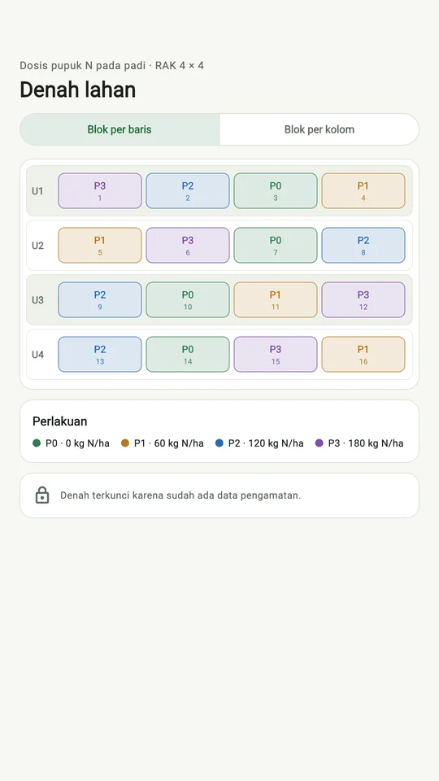
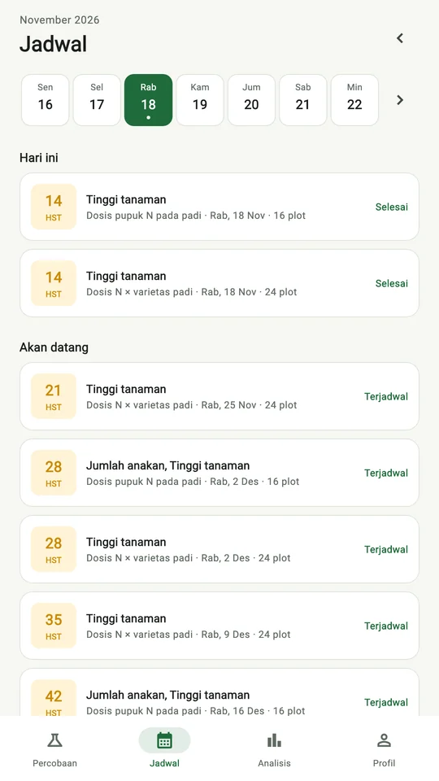
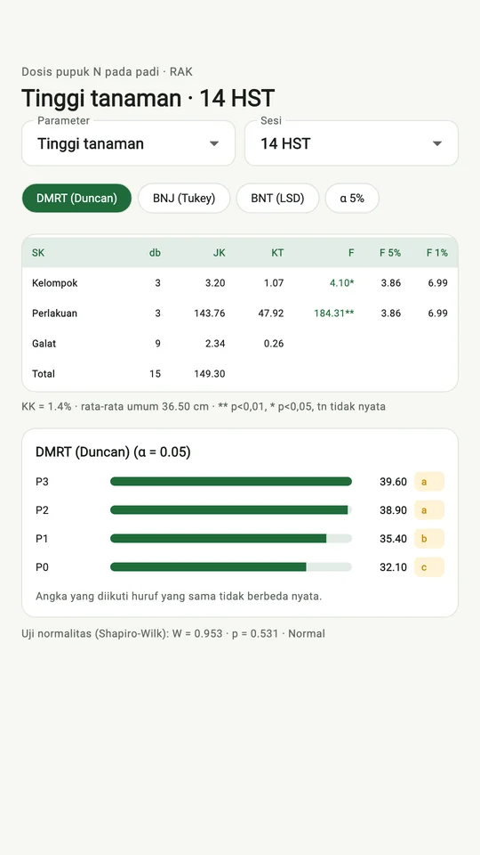
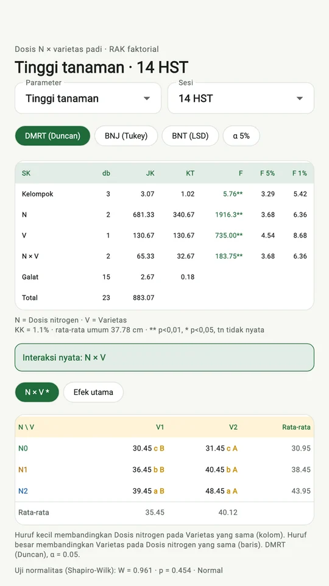

Percobaan lapangan, rapi dari rancangan sampai analisis.
Rancob adalah aplikasi Android untuk mahasiswa dan peneliti agronomi: buat denah acak, catat pengamatan di lahan tanpa sinyal, periksa data, lalu dapatkan ANOVA dengan notasi huruf yang siap ditulis di laporan.
Gratis untuk 1 percobaan aktif, dengan semua fitur pencatatan dan analisis.
| P3 · 54,2 cm | a |
| P2 · 51,8 cm | ab |
| P4 · 49,0 cm | b |
| P1 · 43,5 cm | c |
agri_core yang sama berjalan di aplikasi Android maupun Rancob Web.
Lihat tampilannya di HP
Dirancang agar nyaman dibaca di bawah matahari lapangan, dari denah petak sampai tabel sidik ragam dan interaksi faktorial.




Untuk siapa
Untuk siapa saja yang menjalankan percobaan lapangan dan masih mengandalkan buku catatan, Excel, lalu SAS, SPSS, atau R di akhir musim.
- Mahasiswa yang sedang mengerjakan skripsi atau tesis di bidang agronomi, hortikultura, ilmu tanah, atau proteksi tanaman.
- Dosen pembimbing yang ingin data mahasiswanya rapi dan bisa diperiksa sejak di lahan.
- Peneliti di kampus, lembaga riset, dan perusahaan yang menjalankan beberapa percobaan dalam satu musim.
- Penyuluh dan agronom lapangan yang mengelola demplot dan uji varietas.
Fitur utama
Satu aplikasi untuk seluruh alur percobaan, dengan istilah dan uji yang biasa dipakai di Indonesia.
-
01
ANOVA, Faktorial 2–3 Faktor & Uji Lanjut
Hitung RAL, RAK, dan interaksi sampai A×B×C lengkap dengan tabel dua arah, cek pencilan, uji normalitas Shapiro-Wilk, serta notasi huruf DMRT, BNJ, dan BNT taraf 5% atau 1%.
-
02
Input Per Petak, Mode Tabel & Impor CSV
Catat langsung di lahan tanpa sinyal (sampel dirata-rata otomatis), ketik massal lewat mode tabel, atau impor data percobaan yang sudah selesai langsung dari CSV.
-
03
Rumus Turunan & Templat
.rancobrumusSusun rumus agronomi secara visual (misalnya konversi bobot ubinan ke t/ha atau indeks luas daun), lalu simpan dan bagikan ke rekan lewat berkas
.rancobrumus.
Denah acak bereproduksi
Petak diacak dari angka seed yang tersimpan dan bisa ditukar manual sebelum pengamatan dimulai.
Jadwal pengamatan per HST
Jadwal otomatis tiap beberapa hari, HST tertentu, atau panen — ikut bergeser jika tanam ulang.
Jurnal kegiatan & peringatan PHI
Catat olah tanah, pupuk, penyemprotan, sampai panen dengan peringatan jika masa henti semprot bertabrakan.
Foto per petak & cadangan ZIP
Foto tersimpan bersama petaknya, ekspor ke CSV untuk Excel, dan cadangan ZIP lengkap untuk pindah HP.
Sinkron & kolaborasi segera
Dengan Pro: sinkron antar-HP dan undang rekan sebagai pembaca atau editor. Kolaborator ikut gratis.
Cara kerjanya
- RancangPilih RAL, RAK, atau faktorial, isi perlakuan dan ulangan. Denah petak langsung jadi.
- CatatSesi pengamatan muncul sesuai HST. Isi nilai, foto, dan catatan di lahan, tanpa internet.
- PeriksaRancob menandai data kosong, pencilan, dan sisaan yang tidak normal sebelum dianalisis.
- AnalisisANOVA dan uji lanjut pilihan Anda, lalu ekspor ke CSV untuk laporan.
Coba langsung di browser beta
Tidak ingin memasang apa pun dulu? Rancob Web membuat denah, menerima data, dan menghitung ANOVA langsung di browser. Mesin hitungnya sama dengan aplikasi Android.
Yang bisa dilakukan
RAL, RAK, dan faktorial 2–3 faktor. Input data per plot dan sampel, cek data (pencilan dan Shapiro-Wilk), ANOVA dengan DMRT, BNJ, atau BNT, lalu ekspor CSV.
Yang belum ada
Data hanya tersimpan di browser itu, tanpa akun. Belum ada sinkron, kolaborasi, foto, dan jurnal kegiatan. Batasnya sama dengan paket Gratis: 1 percobaan aktif.
Paket
Mulai gratis. Pro dibeli di dalam aplikasi lewat Google Play saat percobaan Anda bertambah.
Gratis
Untuk satu percobaan, misalnya skripsi.
- 1 percobaan aktif
- Semua fitur rancangan, pencatatan, dan analisis
- Tanpa akun, tanpa iklan
Pro
Untuk peneliti dengan banyak percobaan dan tim lapangan.
- Percobaan aktif tak terbatas
- Sinkron multi-perangkat dan kolaborator segera
- Per semester atau per tahun, uji coba gratis 2 pekan
Rancob Tim untuk lembaga, kampus, dan perusahaan segera hadir · Hubungi kami untuk kebutuhan tim →
Tentang pembuat
Dikembangkan oleh Nazri Hasanulfuad
Rancob dibangun secara mandiri untuk menjembatani pencatatan lapangan yang praktis dengan ketelitian analisis statistik agronomi — memakai satu mesin inti Dart/Flutter yang berjalan offline di perangkat maupun langsung di browser.
Bantu kami menguji Rancob
Rancob sedang disiapkan untuk uji tertutup di Google Play. Daftar sebagai penguji awal dengan akun Gmail yang Anda pakai di Play Store, dan bergabunglah dengan grup penguji.